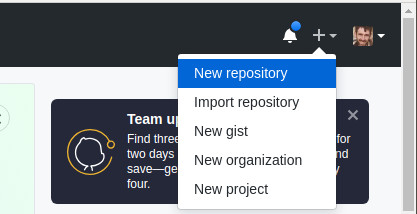
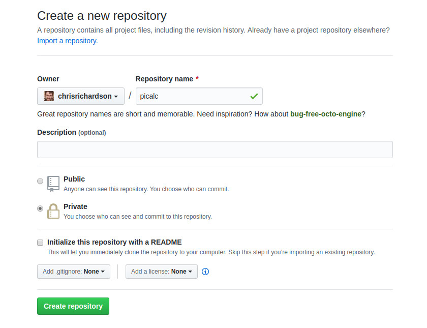
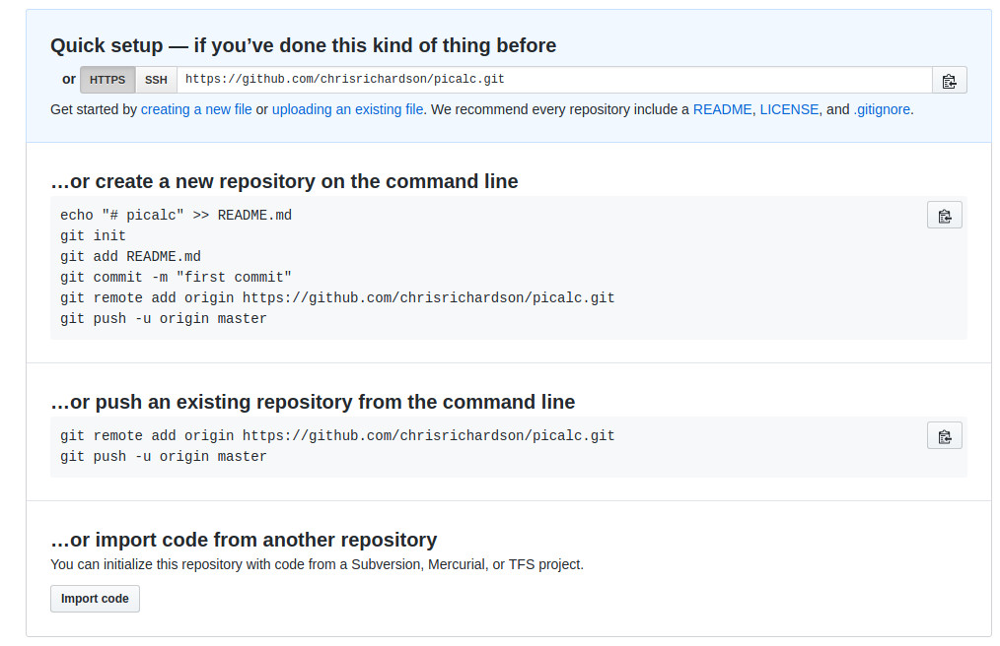
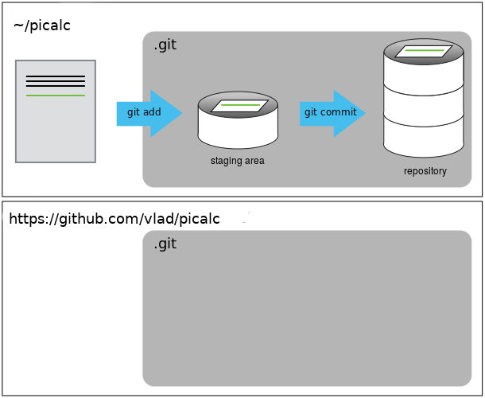
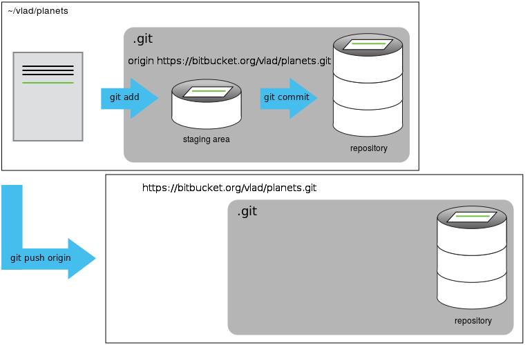

Overview
Teaching: 30 min
Exercises: 0 minQuestions
How do I share my changes with others on the web?
Objectives
Explain what remote repositories are and why they are useful.
Push to or pull from a remote repository.
Version control really comes into its own when we begin to collaborate with other people. We already have most of the machinery we need to do this; the only thing missing is to copy changes from one repository to another.
Systems like Git allow us to move work between any two repositories. In practice, though, it’s easiest to use one copy as a central hub, and to keep it on the web rather than on someone’s laptop. Most programmers use hosting services like GitHub, BitBucket or GitLab to hold those master copies; we’ll explore the pros and cons of this in the final section of this lesson.
Let’s start by creating an account at GitHub. The University of Cambridge recently signed up to “GitHub Education”, which gives some additional benefits for staff and students, but we will not be using any of those features. Go to GitHub and create a login, if you don’t have one already. You will need to confirm your email address. Once you have an account, you should be able to create a new repository online. Click on the “+” sign in the top right corner.

This time, I’m calling the repository “picalc”, as it will include some code to calculate the value of “pi”. Let’s make it a “Private” repository for now. The other options can stay as default.

This effectively does the following on GitHub’s servers:
$ mkdir picalc
$ cd picalc
$ git init
Helpfully, GitHub tells you what to do to start a new repository. The first few lines cover what we have already done.
You will notice some new commands git remote and git push which we will cover in this section.

Let’s follow some of their suggestions and create some files to put in a new repository. Go back to your home directory and make a new folder:
cd ~
mkdir picalc
cd picalc
git init
nano pi.py
In the file, let’s put a simple code to calculate an approximate value for “pi” - NB this is not a serious method, it is very slow!
a = 2.0
for n in range(1, 10000):
a = a * (n*n)/(n*n - 0.25)
print(a)
Try it by running python pi.py. It should print out 3.14151411083.
If you want, you can also create a file called “README” with some text in it e.g. “A simple method to calculate pi.”
git add pi.py README
git commit -m "Code to calculate pi and a README"
Our local repository contains pi.py and README, but the
remote repository on GitHub doesn’t contain any files yet.

The next step is to connect the two repositories. We do this by making the GitHub repository a remote for the local repository.
We will change the authentication from SSH to HTTPS, as it is easier to work with for now. Use a pattern like this (replacing vlad with your github username) - this should be the same command which GitHub suggests when creating the repository.
git remote add origin https://vlad@github.com/vlad/picalc.git
Make sure to use the URL for your repository rather than Vlad’s: the only
difference should be your username instead of vlad.
HTTPS vs. SSH
We use HTTPS here because it does not require additional configuration. You may want to set up SSH access, which is a bit more secure, and does not require a password every time. Follow one of the great tutorials from github, Atlassian/BitBucket and GitLab (this one has a screencast).
If you are feeling confident, it can be done with the following command:
ssh-keygen. You then need to upload the file~/.ssh/id_rsa.pubinto your “SSH and GPG settings” on GitHub.
We can check that the command has worked by running git remote -v:
$ git remote -v
origin https://vlad@github.com/vlad/picalc.git (push)
origin https://vlad@github.com/vlad/picalc.git (fetch)
The name origin is a local nickname for your remote repository: we could use
something else if we wanted to, but origin is the default.
Once the nickname origin is set up, this command will push the changes from
our local repository to the repository on GitHub:
$ git push -u origin master
By adding the “-u” option we connect the “upstream” tag “origin” with the repository so you don’t have to always specify “origin” every time you do “git push”. It is now the default.
Counting objects: 9, done.
Delta compression using up to 4 threads.
Compressing objects: 100% (6/6), done.
Writing objects: 100% (9/9), 821 bytes, done.
Total 9 (delta 2), reused 0 (delta 0)
To https://github.com/vlad/picalc
* [new branch] master -> master
Branch master set up to track remote branch master from origin.
Password Managers
If your operating system has a password manager configured,
git pushwill try to use it when it needs your username and password. For example, this is the default behavior for Git Bash on Windows. If you want to type your username and password at the terminal instead of using a password manager, type:$ unset SSH_ASKPASSin the terminal, before you run
git push. Despite the name, git usesSSH_ASKPASSfor all credential entry, so you may want to unsetSSH_ASKPASSwhether you are using git via SSH or https.You may also want to add
unset SSH_ASKPASSat the end of your~/.bashrcto make git default to using the terminal for usernames and passwords.
Our local and remote repositories are now in this state:

We can pull changes from the remote repository to the local one as well:
$ git pull origin master
From https://github.com/vlad/picalc
* branch master -> FETCH_HEAD
Already up-to-date.
Pulling has no effect in this case because the two repositories are already synchronized. If someone else had pushed some changes to the repository on GitHub, though, this command would download them to our local repository.
Browse to your picalc repository on GitHub.
Try clicking on the ‘Code’ tab at top left. You can use this to browse all the files in your repository. There are a lot of other advanced tabs, but you probably just want to stick to “Code” for now.
Now look at the ‘Commits’ button (it probably just says “1 commit”
and a clockface). This shows a graphical representation of what you
would see with git log. The git commit hashes are shown, and
if you click on one, it will give you the git diff between the
two neighbouring versions.
Push vs. Commit
In this lesson, we introduced the “git push” command. How is “git push” different from “git commit”?
Let’s add some more commits to the repository. Edit picalc.py and
add some more lines, e.g. change it to:
a = 2.0
nmax = 100000
for n in range(1, nmax):
a = a * (n*n)/(n*n - 0.25)
print(a)
git add picalc.py
git commit -m "Set nmax parameter"
git push
Now take a look at the web interface again, and see your new commit.
Fixing Remote Settings
It happens quite often in practice that you made a typo in the remote URL. This exercise is about how to fix this kind of issue. First start by adding a remote with an invalid URL:
git remote add broken https://github.org/this/url/is/invalidDo you get an error when adding the remote? Can you think of a command that would make it obvious that your remote URL was not valid? ~~~ git push broken master ~~~ Can you figure out how to fix the URL (tip: use
git remote -h)? Don’t forget to clean up and remove this remote once you are done with this exercise.
GitHub README file
In this section we learned about creating a remote repository on GitHub. The ‘Overview’ tab suggests you create a README. Try doing that by clicking on the “Create a README” button. What effect will this have on your repository?
Key Points
A local Git repository can be connected to one or more remote repositories.
Use the HTTPS protocol to connect to remote repositories until you have learned how to set up SSH.
git pushcopies changes from a local repository to a remote repository.
git pullcopies changes from a remote repository to a local repository.